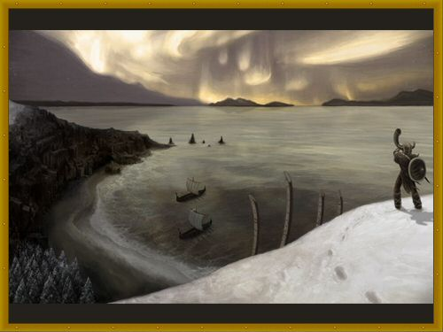

")
Postbag 20
It's been a fairly relaxed month for me: I'm especially grateful that no one has written to the penguins, as I still haven't got all the frost out of my jaw from last month. The pirates were remarkably friendly once they realised I had no loot to plunder, and even gave me some 'rum'. I'm glad I don't have a stomach to be poisoned.
Dear Juna,
While I appreciate being able to collect the Tears of Guthix every six days or so, I wonder why I'm not allowed to mine the magic stones anymore? The light creatures are still attracted to my sapphire lantern light and don't seem to mind transporting me to where I can mine them. I can see the possibilities of making enchanted jewellery with these gems. So why am I not allowed to mine them? Think of the many stories that can be told if these gems were available to mine!
Sincerely,
Your humble storyteller,
Renelda
Dear Renelda,
It has been an age since I coiled myself round a quill, and quite literally so: the last time being in the Second Age, when my quill came from Armadyl himself. Alas, it is a story from an irrelevant time; I would far prefer to hear any of yours.
Anyway, the stones you talk of are too brittle for any purpose other than His tears - a symbol, if you like, of how soft and unready the world was for great Guthix. To use the rocks for jewellery or your own benefit would be disrespectful and not particularly thankful for the lessons the tears have taught you.
I apologise for being a little strong in my warning. Do come and tell me a story sometime.
Juna
Avast! Smith the Pirate Smithy!
Ye scurvy dog! Yer cutlasses be trash! That there Brass Hand Harry Cutlass that ye sold me, it be more of a glorified dagger than a cutlass! A cutlass be a short sword with a slightly curved blade, yes, but more in the way of a short sword, not half a parrot's beak longer than a dagger! Arr, machetes be more cutlass like than yer "cutlasses." All the machetes need are basket hilts and they be cutlasses! The only real cutlass I be a seein' in RuneScape be Cap'n Donny's cutlass! Arr, ye be as bad as Ali Morrisane ye be, sellin' our fellow pirates sub-par piratin' merchandise! Now start smithin' and sellin' us real cutlasses or I'll keelhaul ye and use whatever be left next time I play Trouble Brewin' to make me own special batch o' 'rum'.
Scurvily Yours,
Matthew Swor
Scourge of the Seven Seas!
Arr? Be ye wantin' te go on account with our gang o' fillibusters?
...
Arr, I guess I won't be getting out o' this one quite so easily. Ye've obviously got yerself ahold o' our Little Book o' Piracy, so I be answering ye squarely.
Abaft, Matthew Swor, abaft!
Me cutlasses be cutlasses, straight 'n' true (well, maybe not straight), but they not be fer yer ev'ry day use, they be antiques, museum artefacts; what ye be buying from me be historical pieces. Aye, Brass Hand Harry's cutlass be shorter than yer average, but so be the man himself. Fair enough he be trading 'em back ta me on a weekly basis, but ev'ry one be unique. As fer Unlucky Jenkins's Lucky Cutlass, well that one be more of yer good luck charm than a weapon, see.
Us pirates like our cutlasses on the shorter side fer that up close 'n' pers'nal feel, see. We likes ta sees the yellow of our enemies' eyes. If ye be too binnacled ta see that, ye've got less pirate in ye than a duffle on his athwartships. Look that one up in yer little book, drivelswigger.
If ye've still got issues with me wares, then I be directing ye to some o' me land-pirate chums, the 'friendly' folk o'er at Carruthers, Landsbottom and Og. Get yer corkscrews ready...they love a good game o' Davy's Grip.
Pirate Smith
Azzanadra,
It has been a while since I began to ponder this question, however it has only been recently that I have gotten around to bother to ask it.
In my travels across these lands I have run into various Mahjarrat - You, Akthanakos, Enakhra, Hazeel, Lucien and Zemouregal - but I have been wondering, are you the only 6 Mahjarrat left? Or are the others just in hiding, or have they already gone north? If so, would you provide a list of all the other Mahjarrat, so we, The Followers of Zaros, could be more aware of our enemies, and allies?
For the Glory of Zaros!
A Follower Unknown.
Loyal soldier,
I am troubled to hear that the traitors still live - I especially bear no love towards the dog Lucien. His betrayal was greater than most, so I encourage you to do all you can to eliminate this abomination. Die for our cause, if you must.
As to the number of my tribe that remain, I must concede ignorance - though I should be surprised if there were only six of us left. We are near-immortal, and only die very occasionally. During the time of my imprisonment no more than a dozen are surely slain, and no doubt a few more are weakened or entrapped as I was. In my time we ruled these lands like gods; times, it seems, have changed.
Before I was imprisoned there were many of us, the most powerful of which you have named - but do not forget Sliske the serpent-tongued, who delves the shadows, and the impostor Zamorak, who calls himself a god.
For strength and our Empty Lord,
Azzanadra
Greetings Great Chieftain Brundt of Rellekka,
It appears that my previous letter did not get through but I expect that Postie Pete is busy with other letters. But Anyway...
I have always wondered about the Land of Acheron. You have told me about it but, I do not see any you, our great chieftain, leading an expedition to Acheron. Is it that most of us are still too weak for Acheron? Rest assured, great chieftain, a few of my friends and I are prepared for Acheron. And we have been waiting for months and are awaiting for a ship to sail far north to Acheron. Also, the pirates of the Lunar Sea that Lokar Searunner is with have ventured to Acheron. I'm sure you would not allow some pirates to beat us, US the mighty Fremennik of the north! Or is it that you are afraid that the Dagannoth Kings of Waterbirth Island would launch an attack on Rellekka while you are away on an expedition?
Well, I guess I should not write too much for I expect that you have other pressing matters on your mind.
Till the next time I visit Rellekka,
96653712 (Darvald)
PS : Do you have any idea what the north winds upon which Dagannoth Prime flew are?
Hail from Rellekka, young Fremennik!
I am afraid the last time Postie Pete tried to deliver our mail ended rather badly: we saw him being carried off by one of the great eagles of the west! We were all very glad when he returned with the post this time.
You are eager, and that is commendable, but aye the frozen lands of Acheron are a terrible vicious place. We do not fear the cold but there are things up there that live where no living thing should survive. The stories tell of icy winds with intent so malicious they will wrap themselves around your heart until it freezes like stone.
But do not let your resolve falter, for we are the mighty Fremennik and bravery is not in short supply amongst us! In good time we will venture north and warm the very winds themselves with our battle cries and song; unlike the scurvy pirates we possess qualities other than fearlessness. We are patient and know the time is not yet right, the dangers of the daggermouths have not been overcome yet and until they have it would be prudent to wait.
Your spirit is noble, warrior, and I have no doubt you will be standing on the prow of the first Fremennik ship to break the ice floes of the north, but until the time is right your lust for adventure will have to be satisfied with this painting of our mighty warriors landing on Waterbirth Isle to continue the ongoing struggle against the Daggermouth Kings.
May the winds favour you,
Chieftain Brundt

Dear Postie Pete,
In the Heroes' Guild is a statue next to the one of Arrav: It's a statue of someone named Camorra. Well, if this certain person is still alive could you send this letter to her? And if she isn't, could you tell me what you know about her? If she is alive, here is my letter to her:
Dear Camorra,
Who are you? To have a statue of yourself in the Heroes' Guild next to Arrav must mean that you are quite something! Please tell me about the things you've done (the important things), and how you are related to Arrav, if you are.
Thank you in advance,
Blast Yugioh
PS: Hey Postie, if Camorra is dead, could you please pass this letter on to Reldo, maybe he knows something about her. Thank you.
Bold warrior,
It is good that you show interest in the great heroes of the past, though it is sad that so much of our history has been lost in the ages. We of the Heroes' Guild have always tried to keep the stories alive for the younger generations, hoping that they would be inspired to acts of heroism. Alas, even we know little of Camorra's great acts.
What little we can be sure of is that she lived some time in the middle of the Fourth Age, and that she defeated the dragon Garak, who had laid waste to a number of villages near the Wilderness. We're quite sure that there is more to be discovered about her, but the Heroes' Guild library is woefully inadequate!
Perhaps we should send one of our apprentices to Varrock and Falador to find whatever there might be written about her. Should you discover anything yourself, we would be glad to hear of it.
With honour,
Achietties
Demon Butler,
As your employer, I question what you may be doing at my house while I am out adventuring about the beautiful lands of RuneScape. While I am away, are you doing what I pay you to be doing? Such as chasing out the imps from under the beds.
I have been told that demons have a tendency to not be very good workers and I am concerned that you may be drinking the beer in my barrel and having friends over while I am out.
I am just concerned that I am spending a fair amount of money and you are not working while I am away. Could you please shed some light on what it is you do, while I am away?
A Concerned Employer
Hilart
My Dearest Mr. Hilart, Sir,
Sir's concerns are understandable, but I can assure Sir that us demon butlers are never anything less than professional. Demon-butler training is very assiduous and most strict. I remember how conflagratory and irascible Mr. Mordaut got with the younger students; he was very drag-onian, haw haw.
It is true that us demon butlers have to prove our worth, what with our more, shall we say, pugnacious siblings being most people's experience of demonkind. All one can do is inform Sir that one does not partake of inebriating substances, nor does one have friendly acquaintances...aside from Sir, of course.
To allay Sir's fears, while Sir is indisposed or abroad, one does much cleaning and tidying. Indeed, one chased away a veritable horde of ninja implings from Sir's prize petunias just this morning.
Salutations.
Alathazdrar
Dear Curator of the Varrock Museum,
I seek information on an artifact from the beginning of the Fifth Age. Through many hours of research, I have uncovered evidence of a long lost rune, the life rune. I was hoping you have heard of this artifact, and perhaps have more information on what it did, and why it disappeared from our modern magic spellbook.
From what little I have heard, it perhaps had the marking of a sun, or a "Y" shape.
Any information you can provide would be greatly appreciated, even if it is just to confirm the rune's existence.
Thank you,
Ti83 Plus
Ti83 Plus,
You remind me of something from when I was a wee lad.
I was just starting out as an archaeologist, having passing my Dig Site examinations weeks before. I had struck up a diet of adventure fiction from the Varrock Library and would spend my afternoons with a book on my lap, daydreaming of plundered pyramids. In short, I was brave and impressionable.
On my way through Shantay Pass (although it was called something else at the time) a young gentleman swung me about and told me of a tunnel nearby where a magical object, scarab-like in shape and of the richest colours, was awaiting a brave adventurer. It was made of a mysterious element, fabled but never before seen. It was made of kalphite, he said.
Morrisane was his name.
The moral, if you haven't guessed it, is don't trust what you hear. It may have just come from a Morrisane.
Historian Minas
Dear Duradel,
I have an important question for you, which puzzles me greatly. Why on RuneScape and ScapeRune put together do you have rune claws for weapons? How did you get 99 slayer with those...rune claws? you should be wearing something fearsome, to show yourself as the Great Duradel - I mean, come on, even Vannaka has a dragon square shield and wields a steel two-handed sword with one hand to show off his strength; be careful he doesnt steal your place as the best Slayer Master one day..
Yours slayerfully,
Milandabest
'Ello Milandabest,
How, exactly, are claws not the most fearsome of weapons? To do away with such clunky devices as swords and shields and extend your own body into a weapon itself is a feeling like no other. The perfect symmetry between man and weapon. With my agility and speed I can slip between blows, get up close and personal and then end the threat quickly and neatly.
My student Vannaka may be strong and well armed, but what use is that when by your first swing you've already been stabbed in the back by a lightning fast creature? Besides, rune claws are just the ones I wear for teaching, I've got a special set few have ever seen back at my house for when I really mean business. Vannaka knows this and wouldn't ever want to challenge me - again.
Slayer Master Duradel
Mysterious Old Random Events
While wandering about recently minding my own business, trying to get ahead in life (ha ha!), I was accosted by the Mysterious Old Man. Rather than sending me off to find my way through a maze or to attempt to mimic a mime's actions - which would have been cruel to someone with no body - he simply threw a bundle of papers at me. I had a look at them, and what should I find but his notes on ideas for Random Events.
These are some of the ideas the Mysterious Old Man has had, but ended up throwing at me instead of making them:
UM = Unsuspecting Mug
Mime Racing
UM must defeat three other characters at mime racing. UM jumps on top of mime and holds onto beret. UM then pretends to whip the mime, which will make mime go faster. Mime jumps over invisible obstacles and takes imaginary pit stops.
Reward: UM gets turned inside out.The Land Before Mime
UM teleported to parallel dimension where mime does not exist. UM must convince dimension that mime is a distinguished hobby and spread the (silent) word.
Reward: UM's name changed to Nigel.The Feeble-minded Squirrel of Just-Right-of-Falador
I have captured this terrible and fabled squirrel, through a combination of mind games and sweets. UM is faced with the squirrel and must use words to confuse him, convincing him that he is actually a yew tree.
Reward: Unleashes the Spaniel of Unimaginable Horror on UM.Where's Jad?
UM is blindfolded and led into a room. He must then find TzTok-Jad amongst the brightly coloured furniture. Task is made harder by the UM having owls tied to each of their limbs.
Reward: UM receives TzTok-Jad's toenail clippings. Note: these are awe-inspiringly powerful. Probably not a good idea to let UM have them. Might destroy world.Rusk
An elaborate wargame where UMs must send their troops out to capture large swathes of biscuit.
Reward: UM gains right to gloat for 4.3 minutes.Oh, Postie Pete!
UM find themselves in a poorly written sitcom about a postman who is only a skull. UM must 'laugh' whenever Postie Pete has a misunderstanding with the elderly next door neighbour, trips over bits of pavement or accidentally gets himself into a situation that is both embarrassing and mildly entertaining.
Reward: My old slippers.
That's it from me for now, but I'll see you all again next month, so keep sending me your letters and paintings! Send your letters to  .
.
Don’t forget – when you send us your amazing creations we can’t accept links, so please don’t send them to us!
Next month... Tegid's not bitter at all.
Postie Pete

More articles in
Postbag from the Hedge
|
|